Números
Todos os números estão disponíveis em acesso livre. Clique na imagem para abrir o PDF.
-
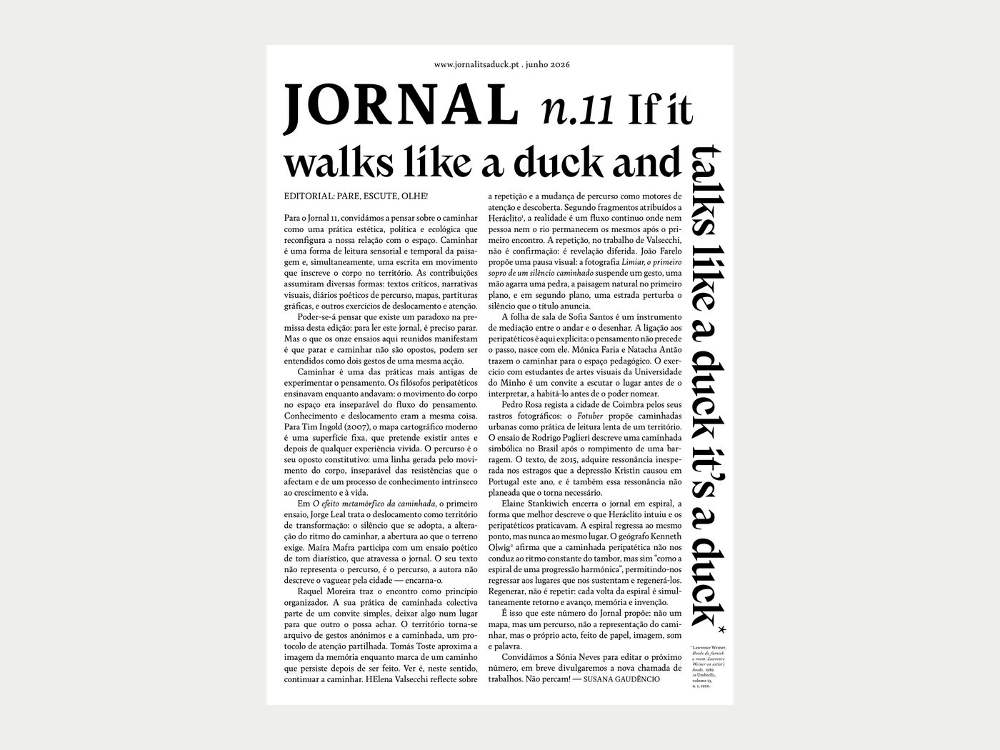
Jornal 11 Descarregar PDF (1,4 MB) -
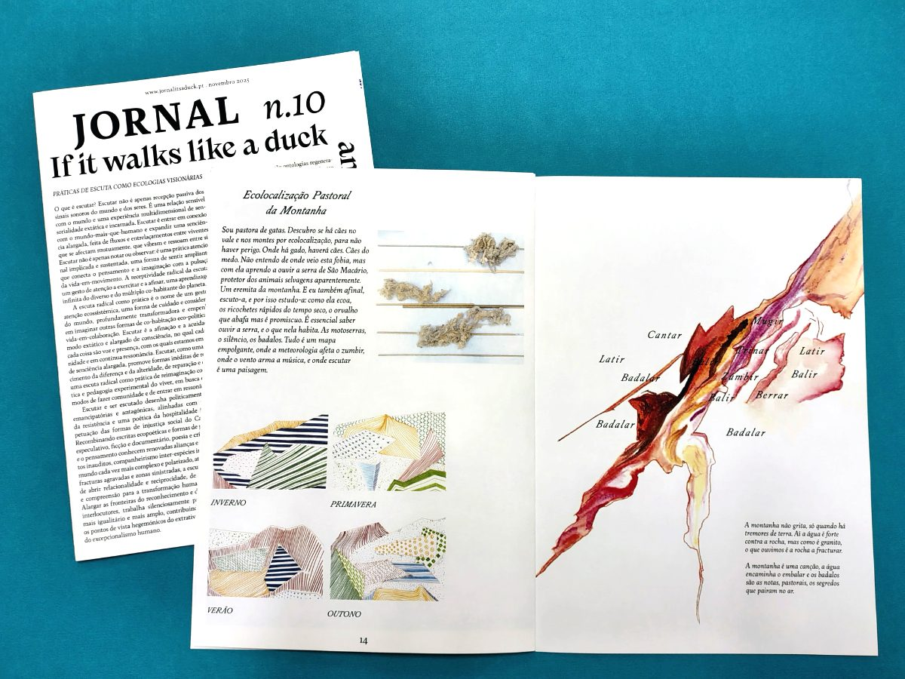
Jornal 10 Descarregar PDF (0,8 MB) -
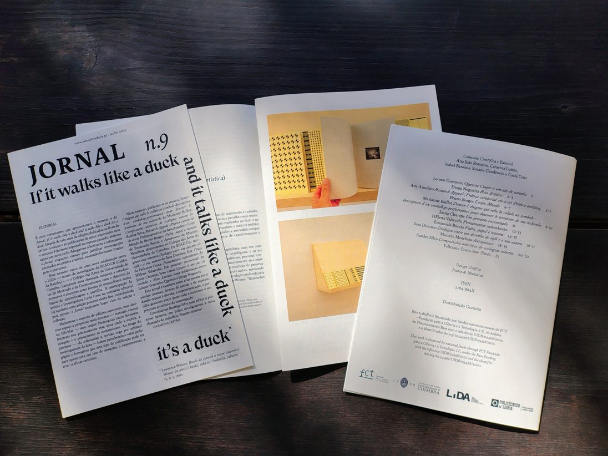
Jornal 9 Descarregar PDF (2,0 MB) -
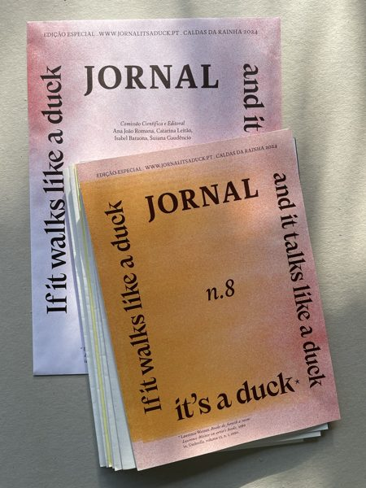
Jornal 8 Edição especial Descarregar PDF (4,6 MB) -
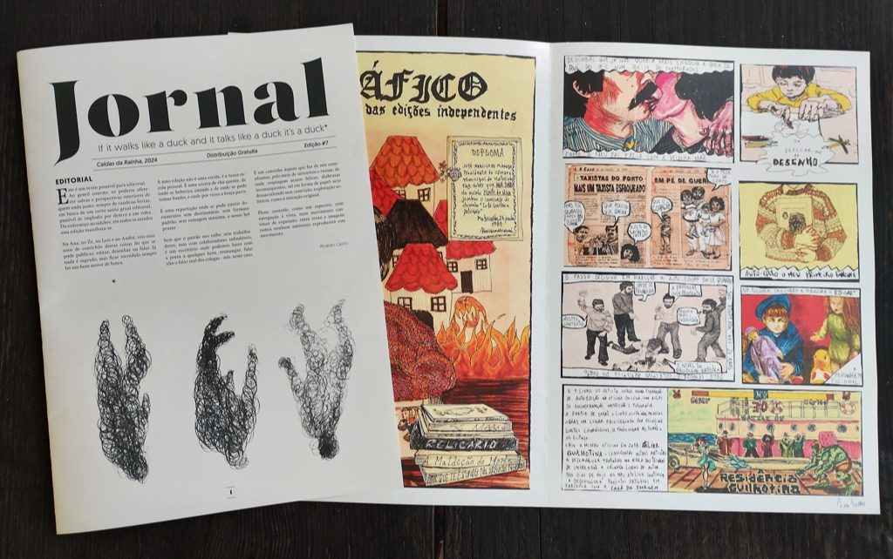
Jornal 7 Descarregar PDF (1,6 MB) -
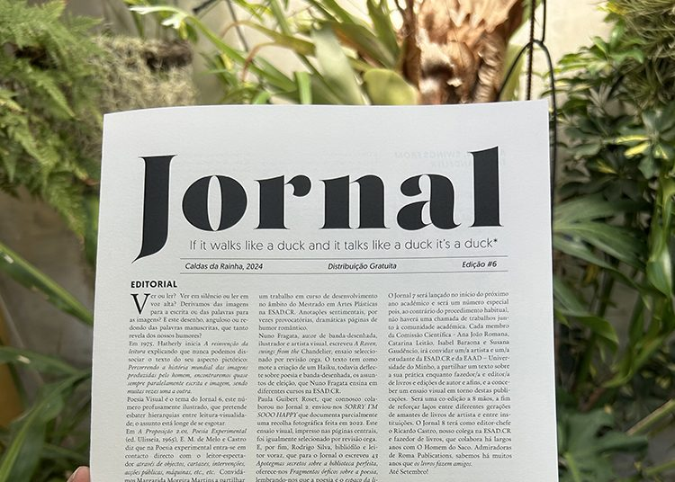
Jornal 6 Descarregar PDF (0,4 MB) -
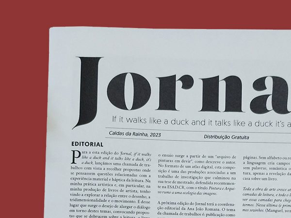
Jornal 5 Descarregar PDF (0,7 MB) -
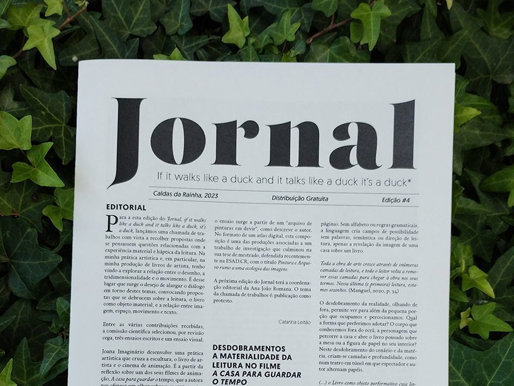
Jornal 4 Descarregar PDF (0,5 MB) -
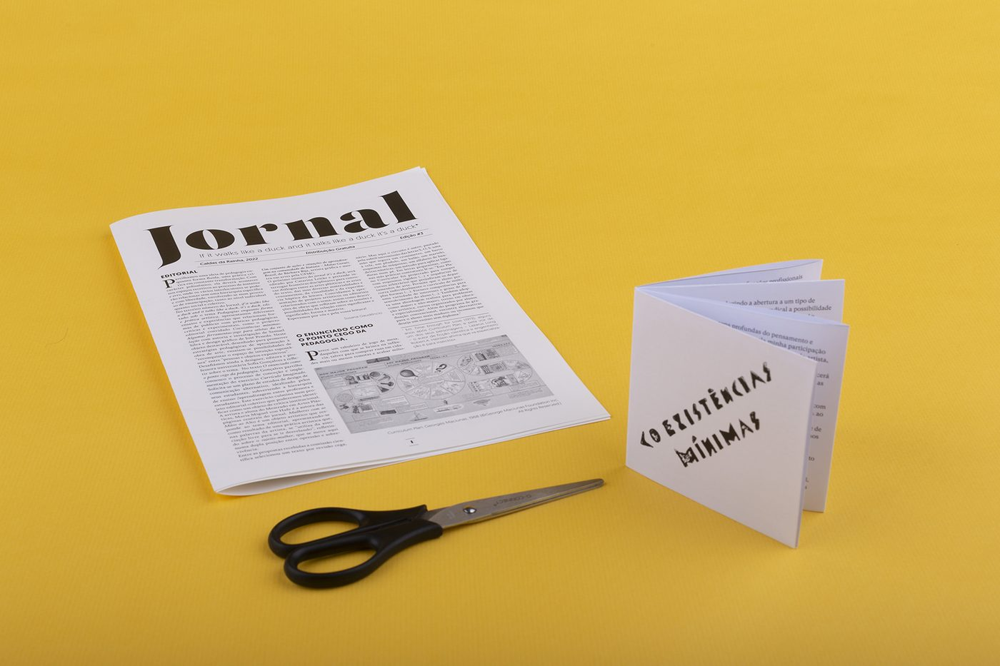
Jornal 3 Descarregar PDF (0,4 MB) -
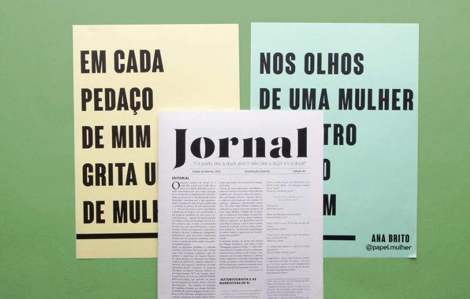
Jornal 2 Descarregar PDF (0,8 MB) -
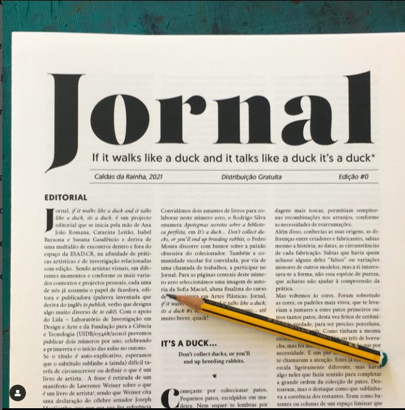
Jornal 1 Descarregar PDF (0,7 MB) -
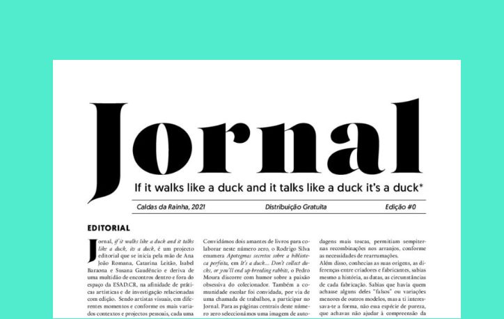
Jornal 0 Descarregar PDF (0,5 MB)